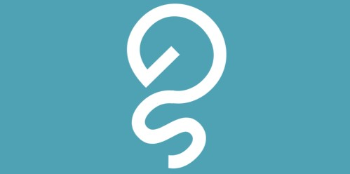

Grid StabilityReal-time stability assessment for secure, resilient, and sustainable power systems.
Explore TechnologyFaster Screening
Physics-based Simulation to AI
Grid Stability is a University of Manchester spinout using AI to detect hidden grid risks in milliseconds.
Grid Stability enables fast, AI-driven stability assessment for modern power systems.
As grids integrate more renewables, traditional simulation tools struggle to keep pace with complexity and speed requirements.
Our technology detects hidden risks in milliseconds; helping operators reduce costs, avoid blackouts, and accelerate the transition to net zero.